|
SDOM - Simple SDL Document Object Model
A lightweight, extensible Document Object Model for SDL-based applications.
|
In SDOM, the Document Object Model (DOM) is a hierarchical tree structure representing all displayable and interactive elements in the system. Each element in the tree is called a node or object, and may have parent/child relationships with other nodes. Nodes can represent UI components, containers, or other resources.
DOM trees are inherently recursive: each node may contain children, and traversal algorithms typically use recursion to visit every node in the hierarchy. Because of this recursive nature, modifying the tree (such as adding or removing nodes) while it is being traversed can disrupt the traversal process. Changes made mid-recursion can invalidate pointers, break parent/child relationships, or cause traversal algorithms to miss nodes or revisit them incorrectly. In the worst case, this can lead to segmentation faults or other critical errors if the recursion encounters a node that has been deleted or moved unexpectedly.
Propagation refers to the process by which changes, events, or updates move through the DOM tree. This includes traversing the tree for rendering, layout, and event delivery (such as mouse clicks or keyboard input). Propagation ensures that updates and events reach the appropriate nodes in the correct order.
To prevent these issues, SDOM defers add/remove actions during traversal, applying them only after traversal completes. Outside of traversal (such as during initialization or setup), nodes can be added or removed immediately, allowing real-time construction and adjustment of the DOM tree.
This document outlines the four main types of DOM traversal and propagation strategies used in SDOM, their responsibilities, and where they are implemented in the architecture.
SVG (static image): 
Core object.EventManager (planned, reference code exists).Factory.IResourceObject instances in the Factory’s internal container.onQuit() on every resource or handling global events.To ensure safe modification of the DOM tree during traversal, all three traversal types (Core, EventManager, Factory) should set an isTraversing flag to true at the start of traversal and clear it when traversal ends.
isTraversing is true, add/remove child operations must be blocked or deferred.isTraversing flag for consistency.This approach maintains the integrity of the DOM tree and event system, preventing undefined behavior and race conditions during traversal.
Note on Initialization and Active Nodes: During initialization (such as building the DOM tree from Lua modules or manual setup), the isTraversing flag should be false, allowing immediate parent/child modifications. This enables real-time adjustment of relationships as nodes are created and attached, without waiting for a deferred update cycle.
However, when a node is active (i.e., it is the current target during DOM traversal or event handling), any add/remove child actions will be deferred until traversal completes. For example, if a Button object responds to a MouseClick event in its Button::onEvent() method, it can request add/remove actions on other nodes, but these changes will not take effect until the next update cycle after traversal ends.
The onEvent() method can poll the traversal state (e.g., via Core::getIsTraversing()) to determine whether changes will be immediate or deferred. This allows event handlers to request structural changes, knowing they will be safely applied after traversal, and that any new links or removals will only be reflected in the DOM tree on the next cycle.
When traversal completes, process the deferred queue with validation. Example pseudocode:
Processing should run on the main thread immediately after traversal finishes (or at a deterministic point in the update loop). If an operation cannot be applied (target destroyed, invalid parent, etc.), log and skip the request rather than crashing.
isTraversing or protect traversal state with a mutex when multiple threads may read/write this flag.Traversal safety checks only apply during active traversal phases (rendering, event propagation, etc.).
This separation ensures modularity, maintainability, and clarity in the codebase. Each traversal type can be extended or optimized independently.
If you previously used JSON to programmatically build a DOM (for example, exported from design tools), convert those configuration files into Lua modules that return tables. Lua modules are easier to compose, can contain helper logic, and integrate directly with the runtime Lua state.
Example JSON → Lua mapping:
JSON:
Lua module:
For bulk conversions, a small script to read JSON and write .lua files is recommended; alternatively, add a Lua JSON library to your runtime if you must parse JSON at runtime.
Note on Deferred Request Validation (Future Consideration): When processing deferred add/remove actions after traversal, each request should be validated to ensure the target node is still valid and available. If a requested action cannot be performed (e.g., the target node is destroyed or missing), log an error or warning for debugging, and consider notifying the requesting node so it can handle the failure gracefully. This helps prevent inconsistent DOM states and improves robustness. Further strategies for error handling and notification may be considered in future revisions.